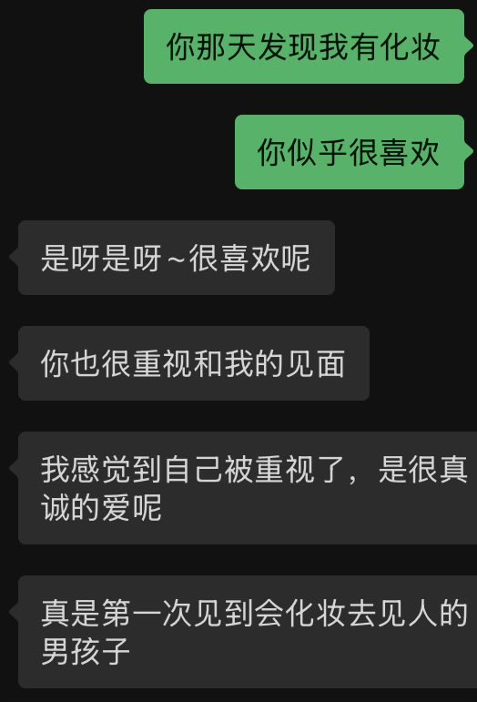

中推忧郁神
@wohaokun555
@Ai_Auroveil 严肃同意

Auroveil
@Ai_Auroveil
我觉得如果有能力的话，
男孩子有必要在见自己心选姐的时候（特别是第一次！），打理好自己画个淡妆喷点香水
因为对一般来说会画全妆出门的女生来说
这其实是一种等价的尊重和对对方的重视
女生画全妆至少要两三个小时，那么身为男生如果也做点力所能及的事情，让自己更体面
女孩子一般会很开心的 https://t.co/0lTMmmybzF